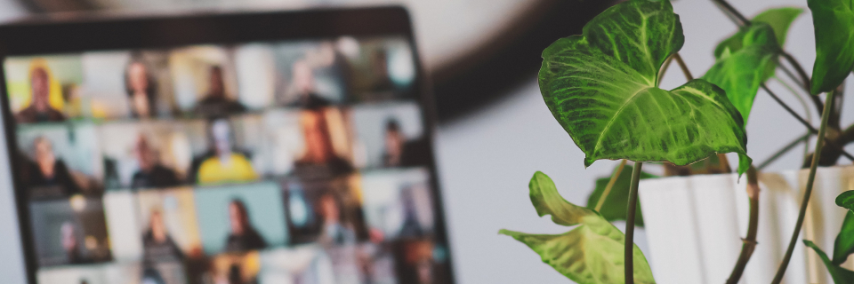

The design process is a step by step framework that we use to tackle undefined and complex user problems. In my time as a UX Designer I've worked across the entire design process gathering skills in all these areas: Discover, Define, Ideate, Design and Validate.
Below you will find some sample assets from previous projects I've worked on, please contact me for case studies that take a deep dive into specific projects.

We gather information on the project we are about to embark on. Some examples of steps we might take here include:
We analyze the observations we have made and identify the core problems that we will tackle.
A persona for a Social Craft Beer Sharing application that I worked on with a startup. We researched and built out three personas to identify areas of opportunity.
We start to generate ideas with the team and take part in design and sketching workshops.

Sketches for a User Dashboard within a Learning Management System. Quick and dirty ideation is always preferred over more complex, timely design techniques. In this project I created alot of 4-up sketches to work through complex elements of the design.
Sketches from above are turned into wireframes of the user dashboard within the Learning Management System. These are now easy to review with stakeholders or put together in a prototype for usability testing.
We create UI Designs and prototypes to be shared with the team for feedback. We are often pulling from our design system and making sure we are using patterns that are consistent in the product.
These UI Designs from a LMS allow product to come to life with visual representation. We were now iterating with feedback from users in prototypes, stakeholders as well as the development team to all align on what we will be moving into production.

This design system was created by me and one another UX Designer. We both researched, audited, and launched the first design system for an application that was five years in production. It brought needed consistency to the UI and created a shared design language for the entire organization.
This step is where we validate our assumptions that the team and stakeholders have made during the project.
Please contact me for case studies that take a deep dive into specific projects.